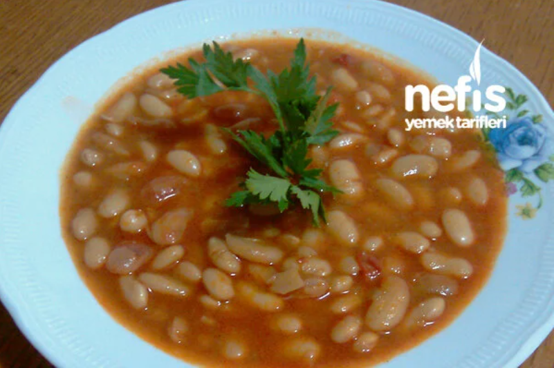
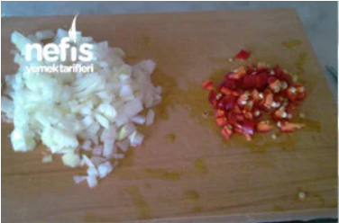
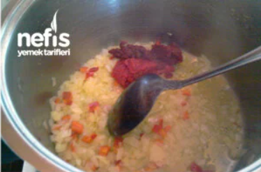
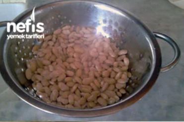
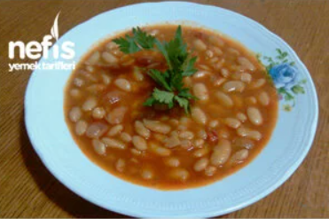

Kuru Fasülye
Etsiz Kuru Fasulye Tarifi İçin Malzemeler
- 2 su bardağı kuru fasulye
- 1 adet kuru soğan
- 1 adet kırmızı süs biberi
- 1 yemek kaşığı domates salçası
- 1 yemek kaşığı biber salçası
- 4 yemek kaşığı sıvı yağ
- 1 çay kaşığı karabiber
- 1 çay kaşığı kırmızı toz biber
- 1 çay kaşığı kimyon
Etsiz Kuru Fasulye Tarifi – Yapılışı
- Kuru fasulyeler 1 gece önceden suya ıslanır. Islama suyu dökülüp yeni su eklenerek haşlanır.
- Minik küpler halinde doğranmış kuru soğan ve biber sıvı yağda pembeleşene kadar kavrulur.
- Üzerine salçalar eklenerek karıştırılır, haşlanmış kuru fasulyeler de eklenerek kavrulmaya devam
edilir.
(Etsiz kuru fasulyede su eklenmeden önce bolca kavurmak gerekir.)
- Yaklaşık 3-4 dakika kavrulduktan sonra üzerini 3 parmak geçecek kadar su eklenir. Baharatlar da
eklenerek harlı ateşte 5 dakika kadar pişirilir, ardından altı kısılır.
- Fasulyeler yumuşayana kadar pişirilir. (Fasulyenin cinsine göre süre değişiklik
gösterebilir.)
- Sıcak servis yapılır. Afiyet olsun.



